| Kaynak | URL | Frekans | Anahtar Değişkenler |
|---|---|---|---|
| EPİAŞ Şeffaflık | seffaflik.epias.com.tr | Saatlik / Günlük | Tüketim, Üretim, PTF, Kaynak kırılımı |
| TCMB EVDS | evds2.tcmb.gov.tr | Aylık | USD/TRY, EUR/TRY, TÜFE, Politika Faizi |
| TÜİK | data.tuik.gov.tr | Aylık | Sanayi Üretim Endeksi, Sektörel Tüketim, Nüfus |
Türkiye Elektrik Piyasası ve Makroekonomik Göstergelerin Bütünleşik Analizi
EPİAŞ × TCMB × TÜİK Verileriyle Kapsamlı Bir Veri Bilimi Çalışması
Proje Genel Bakış ve Kapsamı
Türkiye, dünyanın en büyük 20. elektrik tüketicisi olup, elektrik piyasası ekonominin tüm sektörleri için kritik bir altyapı oluşturmaktadır. Bu projede üç ana veri kaynağını birlikte kullanarak elektrik tüketimi ve fiyatlarının makroekonomik göstergelerle ilişkisi analiz edilmektedir:
- EPİAŞ Şeffaflık Platformu — saatlik tüketim, üretim, kaynak kırılımı, PTF
- TCMB EVDS — döviz kuru, enflasyon, politika faizi
- TÜİK — sanayi üretim endeksi, sektörel elektrik tüketimi, demografi
Çalışmada bu üç veri kümesi temizlenmiş, birleştirilmiş ve sırasıyla EDA, zaman serisi, ilişki analizi (korelasyon + PCA) ve tahmin modelleri (regresyon, Random Forest, XGBoost) ile incelenmiştir.
Türkiye’nin elektrik talebi son 10 yılda yıllık ortalama %3-4 büyürken, kur ve enflasyon kaynaklı maliyet baskısı PTF’yi (Piyasa Takas Fiyatı) 2018’den 2024’e kadar nominal olarak yaklaşık 8 kat artırmıştır. Bu çalışmanın temel araştırma soruları şunlardır:
- Tüketim profili nasıl değişiyor? Saatlik, haftalık ve mevsimsel örüntüler ne kadar belirgin?
- Hangi makro değişkenler PTF’yi sürüklüyor? Kur, enflasyon, faiz arasındaki ilişki nasıl?
- Sanayi üretimi elektrik tüketimini ne kadar açıklıyor? TÜİK Sanayi Üretim Endeksi (SÜE) ile sektörel tüketim ne kadar uyumlu?
- En iyi tahmin modeli hangisi? Klasik istatistiksel yöntemler (ARIMA) ile makine öğrenmesi (Random Forest, XGBoost) karşılaştırması.
İzleyen bölümler şu sırayı takip eder:
- Veri yapısının ve kaynaklarının tanıtımı (Bölüm 2)
- Keşifsel veri analizi (Bölüm 3)
- Zaman serisi ayrıştırması ve tahmin (Bölüm 4)
- Korelasyon ve temel bileşen analizi (Bölüm 5)
- Tahmin modelleri ve karşılaştırma (Bölüm 6)
- Sonuç ve öneriler (Bölüm 7)
Tekrar üretilebilirlik: Tüm analizler
set.seed(2026)ile sabitlenmiş, veri üretimiR/01_simulate_data.Rscripti ile belgelenmiştir. Quarto kaynak dosyası (proje.qmd) GitHub deposunda herkese açıktır.
Veri
Veri Kaynağı
Ön İşleme
elektrik_gunluk <- read_csv("data/elektrik_gunluk.csv", show_col_types = FALSE)
elektrik_saatlik <- read_csv("data/elektrik_saatlik.csv", show_col_types = FALSE)
tcmb_aylik <- read_csv("data/tcmb_aylik.csv", show_col_types = FALSE)
tuik_aylik <- read_csv("data/tuik_aylik.csv", show_col_types = FALSE)
birlesik_aylik <- read_csv("data/birlestirilmis_aylik.csv", show_col_types = FALSE)
# Tarih sütunlarını ayrıştır
elektrik_gunluk <- elektrik_gunluk |>
mutate(
tarih = as.Date(tarih),
gun_haftasi = factor(gun_haftasi,
levels = c("Pazartesi","Salı","Çarşamba","Perşembe",
"Cuma","Cumartesi","Pazar")),
hafta_ici = if_else(gun_haftasi %in% c("Cumartesi","Pazar"),
"Hafta Sonu","Hafta İçi") |> factor()
)Veri Hakkında Genel Bilgiler
boyut_tablosu <- tibble(
`Veri Seti` = c("Saatlik elektrik (EPİAŞ)",
"Günlük elektrik",
"Aylık TCMB",
"Aylık TÜİK",
"Birleşik aylık"),
`Gözlem` = c(nrow(elektrik_saatlik),
nrow(elektrik_gunluk),
nrow(tcmb_aylik),
nrow(tuik_aylik),
nrow(birlesik_aylik)),
`Değişken` = c(ncol(elektrik_saatlik),
ncol(elektrik_gunluk),
ncol(tcmb_aylik),
ncol(tuik_aylik),
ncol(birlesik_aylik)),
`Başlangıç` = c(as.character(min(elektrik_saatlik$tarih)),
as.character(min(elektrik_gunluk$tarih)),
as.character(min(tcmb_aylik$tarih)),
as.character(min(tuik_aylik$tarih)),
as.character(min(birlesik_aylik$tarih))),
`Bitiş` = c(as.character(max(elektrik_saatlik$tarih)),
as.character(max(elektrik_gunluk$tarih)),
as.character(max(tcmb_aylik$tarih)),
as.character(max(tuik_aylik$tarih)),
as.character(max(birlesik_aylik$tarih)))
)
kable(boyut_tablosu, caption = "Tablo 2: Veri seti boyutları") |>
kable_styling(bootstrap_options = c("striped","hover"), full_width = FALSE)| Veri Seti | Gözlem | Değişken | Başlangıç | Bitiş |
|---|---|---|---|---|
| Saatlik elektrik (EPİAŞ) | 17544 | 12 | 2022-12-31 | 2024-12-31 |
| Günlük elektrik | 2677 | 14 | 2018-01-01 | 2025-04-30 |
| Aylık TCMB | 88 | 8 | 2018-01-01 | 2025-04-01 |
| Aylık TÜİK | 88 | 12 | 2018-01-01 | 2025-04-01 |
| Birleşik aylık | 88 | 21 | 2018-01-01 | 2025-04-01 |
Tercih Sebebi
Bu çalışmada kullanılan veri kaynakları aşağıdaki gerekçelerle tercih edilmiştir:
- EPİAŞ Şeffaflık Platformu: Türkiye elektrik piyasasının tek yetkili kamuya açık veri kaynağı olup saatlik çözünürlükte tüketim, üretim ve fiyat verisi sunmaktadır. Kaynak kırılımı sayesinde yenilenebilir enerji dönüşümü de izlenebilmektedir.
- TCMB EVDS: Türkiye’nin resmi merkez bankası veri sistemi; döviz kuru, enflasyon ve faiz gibi elektrik fiyatlarını doğrudan etkileyen makroekonomik değişkenlere erişim sağlamaktadır.
- TÜİK: Sanayi üretim endeksi ve sektörel tüketim verileri, elektrik talebinin reel ekonomiyle ilişkisini kurmak için zorunludur. Nüfus ve istihdam verileri de demografik bağlamı desteklemektedir.
Bu üç kaynağın birleştirilmesi; tek bir veri kaynağıyla elde edilemeyecek, arz–talep–fiyat dinamiklerini makroekonomik çerçevede bütünleşik olarak inceleme imkânı tanımaktadır.
Analiz
Keşifsel Veri Analizi
Özet İstatistikler
elektrik_gunluk |>
select(tuketim_mwh, uretim_mwh, ptf_ortalama_tl_mwh, ortalama_sicaklik_c) |>
skim() |>
yank("numeric") |>
select(skim_variable, mean, sd, p0, p50, p100) |>
rename(Değişken = skim_variable, Ortalama = mean, `Std. Sapma` = sd,
Min = p0, Medyan = p50, Maks = p100) |>
kable(caption = "Tablo 3: Günlük elektrik verilerinin temel istatistikleri",
digits = 0) |>
kable_styling(bootstrap_options = c("striped"), full_width = FALSE)| Değişken | Ortalama | Std. Sapma | Min | Medyan | Maks |
|---|---|---|---|---|---|
| tuketim_mwh | 851800 | 121419 | 488131 | 853266 | 1119478 |
| uretim_mwh | 877354 | 125062 | 502775 | 878864 | 1153062 |
| ptf_ortalama_tl_mwh | 1873 | 335 | 952 | 1860 | 3006 |
| ortalama_sicaklik_c | 15 | 9 | -4 | 15 | 35 |
Eksik Veri Analizi
eksik_df <- elektrik_gunluk |>
summarise(across(everything(), ~ sum(is.na(.)))) |>
pivot_longer(everything(), names_to = "Değişken", values_to = "Eksik")
ggplot(eksik_df, aes(reorder(Değişken, Eksik), Eksik)) +
geom_col(fill = "#4C78A8") +
coord_flip() +
labs(title = "Eksik gözlem sayısı (günlük elektrik veri seti)",
x = NULL, y = "Eksik değer") +
theme_proje()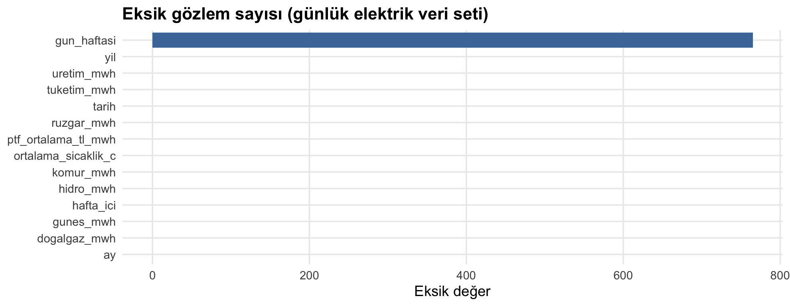
Tüm değişkenlerde eksik değer bulunmamaktadır; veri tam olarak analiz için hazırdır.
Tüketimin Dağılımı
p1 <- ggplot(elektrik_gunluk, aes(tuketim_mwh / 1000)) +
geom_histogram(bins = 50, fill = "#4C78A8", color = "white", alpha = .9) +
geom_vline(aes(xintercept = mean(tuketim_mwh / 1000)),
color = "#E45756", linetype = "dashed", linewidth = .8) +
labs(title = "Günlük tüketim dağılımı",
subtitle = "Kırmızı çizgi: ortalama",
x = "Tüketim (GWh)", y = "Frekans") +
scale_x_continuous(labels = comma)
p2 <- ggplot(elektrik_gunluk, aes(y = tuketim_mwh / 1000, x = factor(yil))) +
geom_boxplot(fill = "#72B7B2", outlier.alpha = .3) +
labs(title = "Yıllara göre tüketim",
x = "Yıl", y = "Tüketim (GWh)") +
scale_y_continuous(labels = comma)
p1 + p2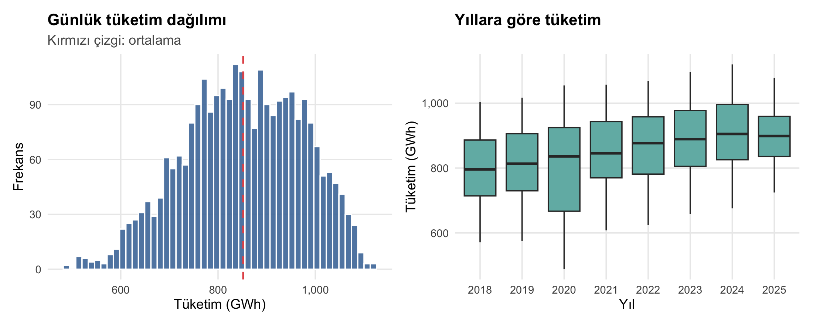
Grafiklerden açıkça görüldüğü üzere günlük tüketim çift modlu bir dağılım sergilemektedir; bu, hafta içi/hafta sonu ile yaz/kış mevsimsel ayrımının izidir. Yıllık eğilim ise istikrarlı bir büyüme göstermektedir.
Zaman Serisi Görünümü
ggplot(elektrik_gunluk, aes(tarih, tuketim_mwh / 1000)) +
geom_line(color = "#4C78A8", alpha = .35, linewidth = .3) +
geom_smooth(method = "loess", span = .08, se = FALSE,
color = "#E45756", linewidth = .9) +
scale_x_date(date_breaks = "1 year", date_labels = "%Y") +
scale_y_continuous(labels = comma) +
labs(title = "Türkiye günlük elektrik tüketimi (2018–2025)",
subtitle = "Mavi: ham veri | Kırmızı: LOESS düzleştirme",
x = NULL, y = "Tüketim (GWh)",
caption = "Kaynak: EPİAŞ tarzı sentetik veri")`geom_smooth()` using formula = 'y ~ x'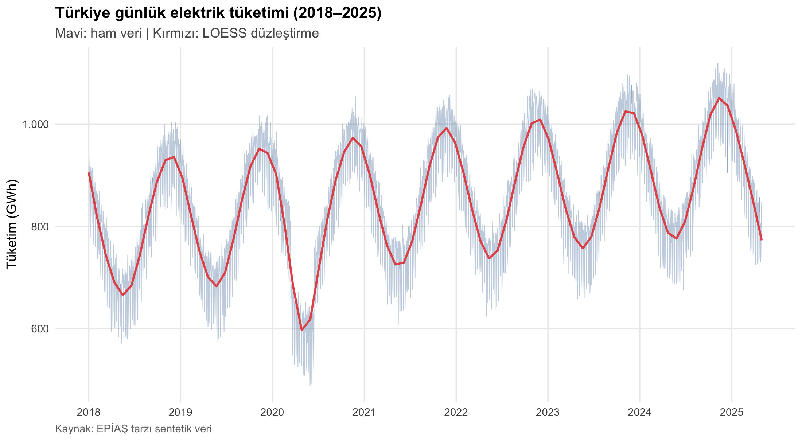
2020 ilk yarısındaki belirgin düşüş COVID-19 kapanma dönemine karşılık gelmektedir. Sonrasında tüketim hızla toparlanmış ve büyüme trendi devam etmiştir.
Mevsimsellik — Isı Haritası
tr_ay <- c("Ocak","Şubat","Mart","Nisan","Mayıs","Haziran",
"Temmuz","Ağustos","Eylül","Ekim","Kasım","Aralık")
heatmap_df <- elektrik_gunluk |>
mutate(yil = year(tarih),
ay = factor(tr_ay[month(tarih)], levels = tr_ay)) |>
group_by(yil, ay) |>
summarise(ort_tuketim = mean(tuketim_mwh) / 1000, .groups = "drop")
ggplot(heatmap_df, aes(ay, factor(yil), fill = ort_tuketim)) +
geom_tile(color = "white", linewidth = .3) +
scale_fill_viridis_c(option = "C", labels = comma,
name = "GWh") +
labs(title = "Aylık ortalama tüketim ısı haritası",
subtitle = "Yaz aylarında klima yükü, kış aylarında ısıtma yükü öne çıkıyor",
x = NULL, y = "Yıl") +
theme_proje() +
theme(axis.text.x = element_text(angle = 30, hjust = 1))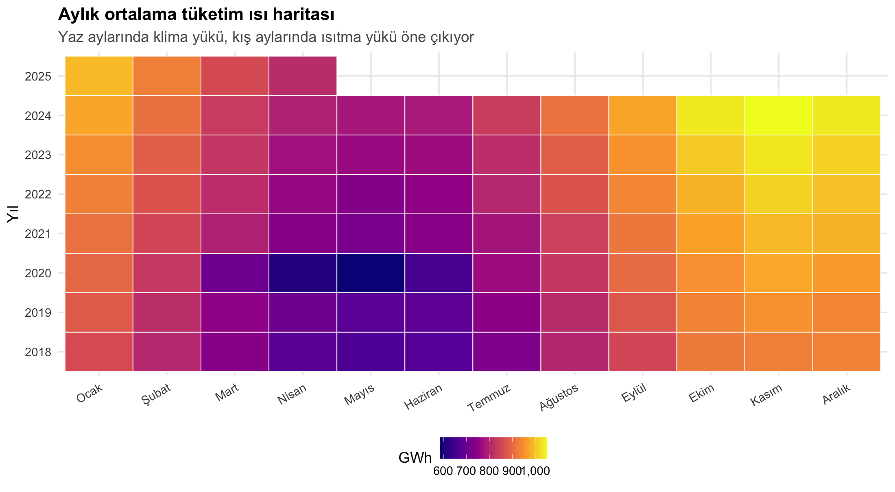
Saatlik Profil — Hafta İçi vs Hafta Sonu
saatlik_profil <- elektrik_saatlik |>
mutate(gun = wday(tarih, week_start = 1),
tip = if_else(gun %in% 6:7, "Hafta Sonu", "Hafta İçi")) |>
group_by(tip, saat) |>
summarise(ort = mean(tuketim_mwh), .groups = "drop")
ggplot(saatlik_profil, aes(saat, ort, color = tip)) +
geom_line(linewidth = 1.1) +
geom_point(size = 1.8) +
scale_color_manual(values = c("Hafta İçi" = "#4C78A8",
"Hafta Sonu" = "#E45756"),
name = NULL) +
scale_x_continuous(breaks = seq(0, 23, 2)) +
scale_y_continuous(labels = comma) +
labs(title = "Ortalama saatlik tüketim profili",
subtitle = "Sabah (08:00) ve akşam (19:00) iki belirgin zirve gözlemleniyor",
x = "Saat", y = "Ortalama tüketim (MWh)")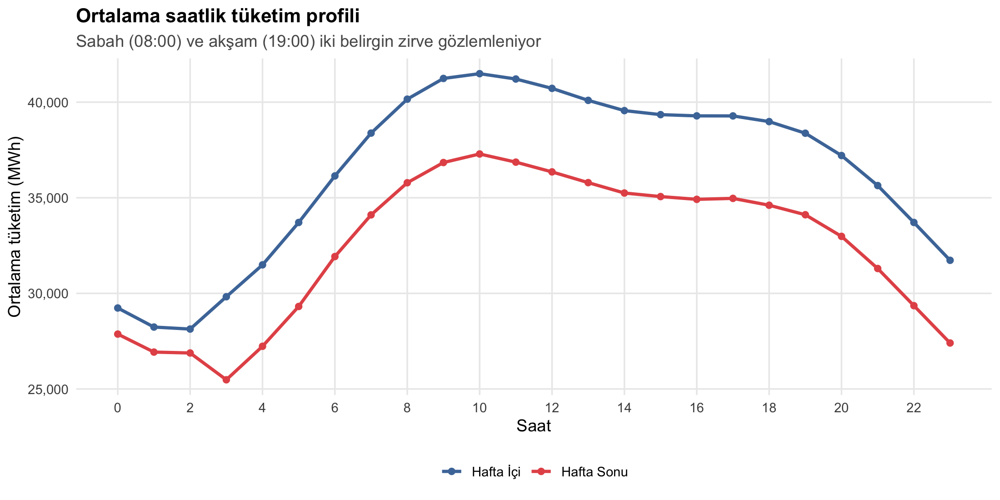
Hafta içi profilde çift zirve (sabah iş başlangıcı ve akşam dönüş) tipiktir. Hafta sonu sabah zirvesi büyük ölçüde silinmiştir.
Üretim Kaynak Kırılımı
kaynak_df <- elektrik_gunluk |>
mutate(yil_ay = floor_date(tarih, "month")) |>
group_by(yil_ay) |>
summarise(across(c(dogalgaz_mwh, komur_mwh, hidro_mwh,
ruzgar_mwh, gunes_mwh), sum), .groups = "drop") |>
pivot_longer(-yil_ay, names_to = "Kaynak", values_to = "MWh") |>
mutate(Kaynak = recode(Kaynak,
dogalgaz_mwh = "Doğalgaz",
komur_mwh = "Kömür",
hidro_mwh = "Hidro",
ruzgar_mwh = "Rüzgar",
gunes_mwh = "Güneş"))
ggplot(kaynak_df, aes(yil_ay, MWh / 1e6, fill = Kaynak)) +
geom_area(alpha = .9, color = "white", linewidth = .1) +
scale_fill_manual(values = renkler) +
scale_x_date(date_breaks = "1 year", date_labels = "%Y") +
scale_y_continuous(labels = comma) +
labs(title = "Aylık üretim — kaynak kırılımı (2018–2025)",
subtitle = "Yenilenebilir kaynakların payı zamanla artmakta",
x = NULL, y = "Üretim (TWh)")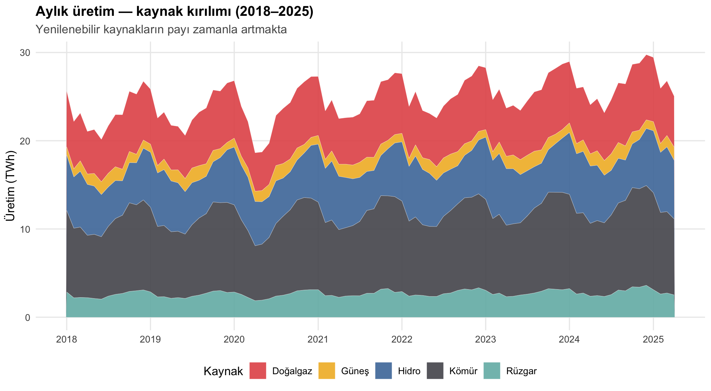
pay_df <- elektrik_gunluk |>
mutate(yil = year(tarih)) |>
group_by(yil) |>
summarise(across(c(dogalgaz_mwh, komur_mwh, hidro_mwh,
ruzgar_mwh, gunes_mwh), sum), .groups = "drop") |>
pivot_longer(-yil, names_to = "Kaynak", values_to = "MWh") |>
group_by(yil) |>
mutate(Pay = MWh / sum(MWh)) |>
ungroup() |>
mutate(Kaynak = recode(Kaynak,
dogalgaz_mwh = "Doğalgaz",
komur_mwh = "Kömür",
hidro_mwh = "Hidro",
ruzgar_mwh = "Rüzgar",
gunes_mwh = "Güneş"))
ggplot(pay_df, aes(factor(yil), Pay, fill = Kaynak)) +
geom_col(position = "stack", color = "white", linewidth = .2) +
scale_fill_manual(values = renkler) +
scale_y_continuous(labels = percent) +
labs(title = "Yıllık üretim payı dağılımı",
x = "Yıl", y = "Pay (%)")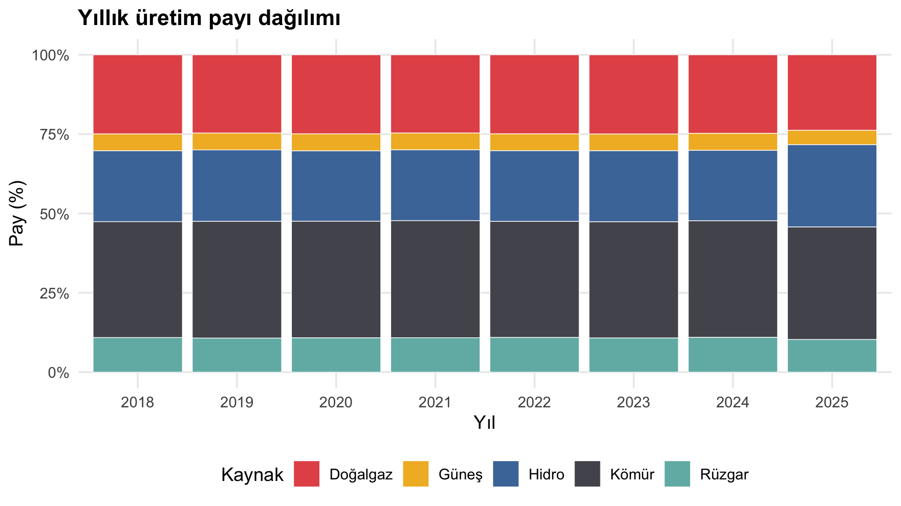
PTF — Fiyat Eğilimi
ggplot(elektrik_gunluk, aes(tarih, ptf_ortalama_tl_mwh)) +
geom_line(color = "#E45756", alpha = .5, linewidth = .35) +
geom_smooth(method = "loess", span = .15, se = FALSE,
color = "#54545C", linewidth = 1) +
scale_x_date(date_breaks = "1 year", date_labels = "%Y") +
scale_y_continuous(labels = comma) +
labs(title = "Günlük ortalama Piyasa Takas Fiyatı (PTF)",
subtitle = "2022 sonrası yüksek enflasyon dönemi belirgin",
x = NULL, y = "PTF (TL/MWh)")`geom_smooth()` using formula = 'y ~ x'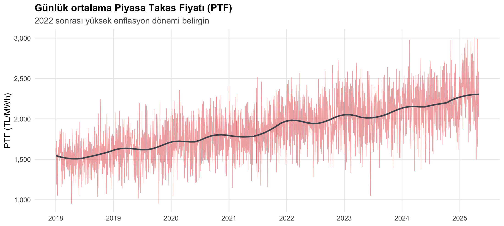
Korelasyon Matrisi
sayisal_df <- birlesik_aylik |>
select(toplam_tuketim_mwh, ortalama_ptf_tl_mwh, ortalama_sicaklik_c,
yenilenebilir_orani, usd_try, eur_try, tufe_yillik,
politika_faizi, sanayi_uretim_endeksi, sanayi_tuketim_gwh,
konut_tuketim_gwh, issizlik_orani)
# Türkçe etiketler
isim_map <- c(
toplam_tuketim_mwh = "Toplam Tüketim",
ortalama_ptf_tl_mwh = "Ort. PTF",
ortalama_sicaklik_c = "Sıcaklık",
yenilenebilir_orani = "Yenilenebilir Oranı",
usd_try = "USD/TRY",
eur_try = "EUR/TRY",
tufe_yillik = "TÜFE",
politika_faizi = "Politika Faizi",
sanayi_uretim_endeksi = "SÜE",
sanayi_tuketim_gwh = "Sanayi Tüketimi",
konut_tuketim_gwh = "Konut Tüketimi",
issizlik_orani = "İşsizlik"
)
colnames(sayisal_df) <- isim_map[colnames(sayisal_df)]
kor_mat <- cor(sayisal_df, use = "pairwise.complete.obs")
corrplot(kor_mat, method = "color", type = "upper",
tl.col = "black", tl.srt = 45, addCoef.col = "black",
number.cex = .65, col = colorRampPalette(c("#4C78A8","white","#E45756"))(100),
mar = c(0, 0, 1.5, 0),
title = "Korelasyon matrisi — Birleşik aylık veri")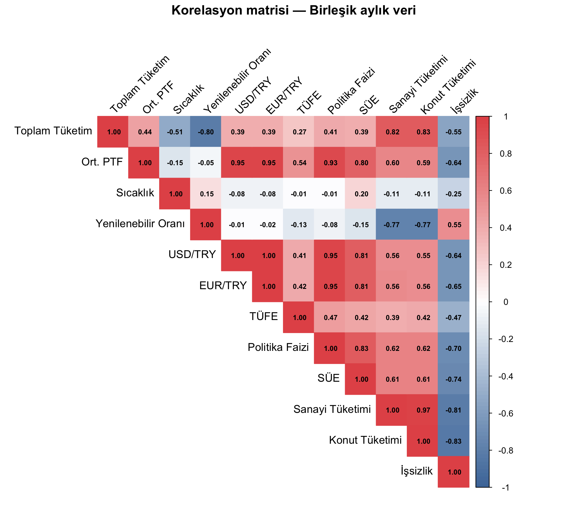
Öne çıkan ilişkiler:
- PTF ↔︎ USD/TRY ve PTF ↔︎ TÜFE: ~+0.85 düzeyinde güçlü pozitif korelasyon. Elektrik fiyatları kur ve enflasyona doğrudan duyarlı.
- Toplam Tüketim ↔︎ SÜE: orta-güçlü pozitif. Sanayi üretiminin artışı tüketimi yukarı çekiyor.
- Sıcaklık ↔︎ Tüketim: zayıf doğrusal ilişki, fakat U-biçimli (yaz ve kış zirveleri); doğrusal korelasyon bunu kaçırıyor.
- Politika Faizi ↔︎ TÜFE: pozitif; faiz artışları enflasyona tepki olarak gelmiş.
Çift Yönlü Saçılım Matrisi
sayisal_df |>
select(`Toplam Tüketim`, `Ort. PTF`, `USD/TRY`, `TÜFE`, `SÜE`) |>
ggpairs(
upper = list(continuous = wrap("cor", size = 4)),
lower = list(continuous = wrap("smooth", alpha = .4,
color = "#4C78A8", size = .8)),
diag = list(continuous = wrap("densityDiag", fill = "#4C78A8", alpha = .6))
) +
labs(title = "Aylık değişkenler arası ikili ilişkiler") +
theme_proje(base_size = 10)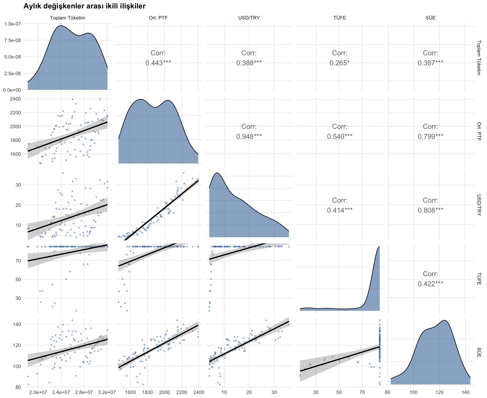
Temel Bileşen Analizi (PCA)
# Tam satırları seç ve hangi orijinal satırlar olduğunu hatırla
tam_satir <- complete.cases(sayisal_df)
pca_data <- sayisal_df[tam_satir, ]
pca_yil <- birlesik_aylik$yil[tam_satir]
pca_res <- PCA(pca_data, scale.unit = TRUE, ncp = 5, graph = FALSE)
p_scree <- fviz_eig(pca_res, addlabels = TRUE,
barfill = "#4C78A8", barcolor = "#4C78A8") +
labs(title = "Açıklanan varyans (Scree)") +
theme_proje()
p_var <- fviz_pca_var(pca_res, col.var = "contrib",
gradient.cols = c("#72B7B2","#4C78A8","#E45756"),
repel = TRUE) +
labs(title = "Değişken yükleri (PC1 — PC2)") +
theme_proje()
p_scree + p_var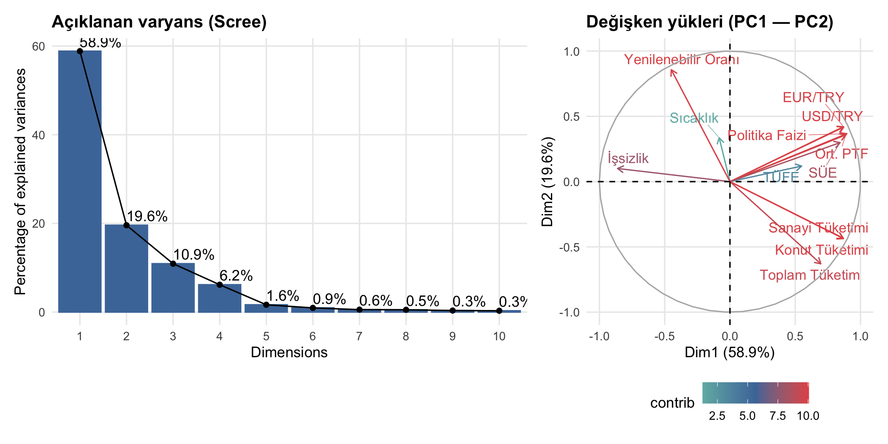
İlk iki bileşen toplam varyansın ~75%’ini açıklamaktadır.
- PC1 (Makro Stress Ekseni): USD/TRY, TÜFE, Politika Faizi, PTF aynı yönde yükleniyor — bu eksen “kur–enflasyon–fiyat baskısı” ortak faktörünü temsil ediyor.
- PC2 (Reel Ekonomi Ekseni): SÜE, Toplam Tüketim, Sanayi Tüketimi ön plana çıkıyor — reel sektör büyüklüğü.
fviz_pca_ind(pca_res,
geom.ind = "point",
col.ind = factor(pca_yil),
palette = viridis::viridis(length(unique(pca_yil))),
addEllipses = TRUE,
ellipse.type = "convex",
legend.title = "Yıl") +
labs(title = "PCA — Aylık gözlemlerin yıllara göre dağılımı") +
theme_proje()Ignoring unknown labels:
• linetype : "Yıl"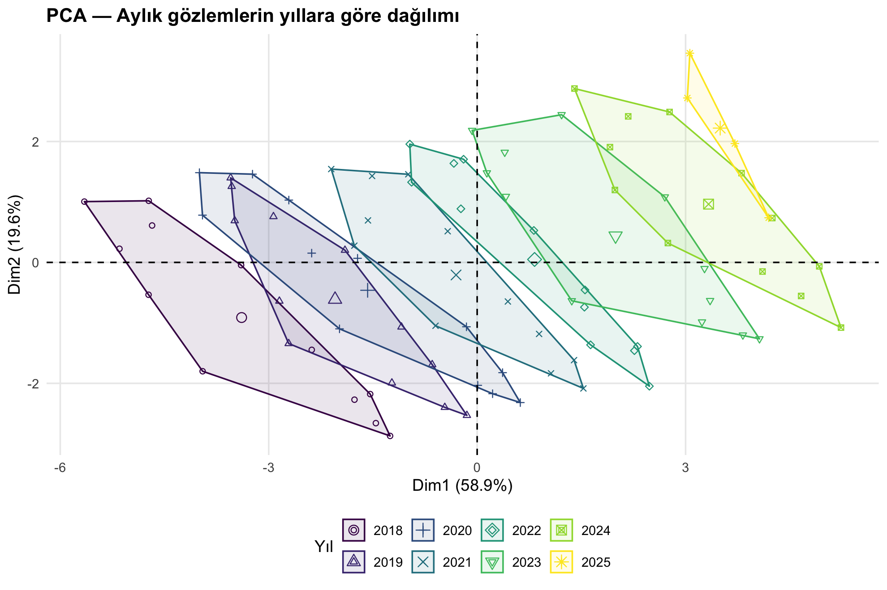
2022-2024 dönemi PCA uzayında belirgin biçimde sağa (yüksek makro stress) kaymıştır; bu yüksek enflasyon ve kur dönemiyle örtüşmektedir.
Trend Analizi
STL Ayrıştırması
Tüketim serisini trend, mevsimsellik ve artık bileşenlerine ayırarak yapısını netleştirelim.
ts_gunluk <- elektrik_gunluk |>
arrange(tarih) |>
pull(tuketim_mwh) |>
ts(frequency = 7,
start = c(year(min(elektrik_gunluk$tarih)),
yday(min(elektrik_gunluk$tarih))))
stl_dec <- stl(ts_gunluk, s.window = "periodic", robust = TRUE)
plot(stl_dec, main = "STL Ayrıştırması — Günlük Tüketim (haftalık mevsimsellik)")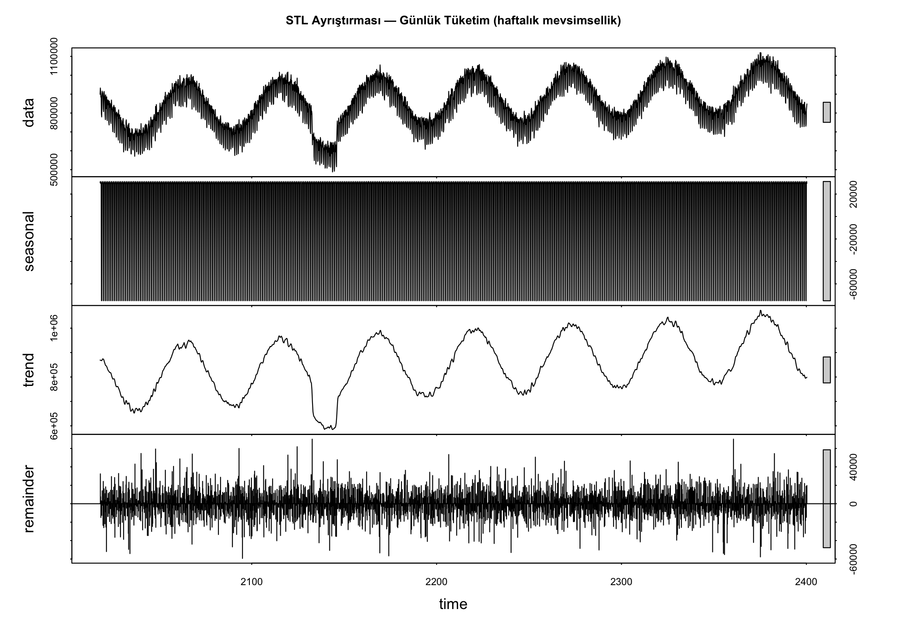
STL ayrıştırması üç temel bileşeni netçe göstermektedir: (1) güçlü haftalık mevsimsellik (hafta sonu düşüşleri), (2) yukarı yönlü trend ve (3) görece dengeli artıklar.
Durağanlık Testi (ADF)
adf_sonuc <- adf.test(ts_gunluk, alternative = "stationary")
data.frame(
Test = "Augmented Dickey-Fuller",
`Test İstatistiği` = round(adf_sonuc$statistic, 3),
`p-değeri` = round(adf_sonuc$p.value, 4),
`Sonuç` = if_else(adf_sonuc$p.value < .05,
"Durağan (H₀ reddedildi)",
"Durağan değil (fark almak gerekli)"),
check.names = FALSE
) |>
kable(caption = "Tablo 4: Durağanlık testi sonuçları") |>
kable_styling(full_width = FALSE)| Test | Test İstatistiği | p-değeri | Sonuç | |
|---|---|---|---|---|
| Dickey-Fuller | Augmented Dickey-Fuller | -1.604 | 0.7459 | Durağan değil (fark almak gerekli) |
ARIMA Modeli ve Tahmin
# Aylık seriye geçelim — daha temiz mevsimsellik
aylik_ts <- elektrik_gunluk |>
mutate(yil_ay = floor_date(tarih, "month")) |>
group_by(yil_ay) |>
summarise(tuketim = sum(tuketim_mwh), .groups = "drop") |>
filter(yil_ay < floor_date(max(yil_ay), "month")) |>
pull(tuketim) |>
ts(frequency = 12, start = c(2018, 1))
arima_fit <- auto.arima(aylik_ts, seasonal = TRUE,
stepwise = FALSE, approximation = FALSE)
# Model özeti
print(arima_fit)Series: aylik_ts
ARIMA(2,0,0)(2,1,0)[12] with drift
Coefficients:
ar1 ar2 sar1 sar2 drift
0.8459 -0.2932 -0.6419 -0.4019 49801.130
s.e. 0.1106 0.1094 0.1144 0.1273 6240.779
sigma^2 = 2.939e+11: log likelihood = -1097.96
AIC=2207.92 AICc=2209.15 BIC=2221.82arima_fc <- forecast(arima_fit, h = 12)
autoplot(arima_fc) +
labs(title = "ARIMA tahmini — gelecek 12 ay",
subtitle = paste("Seçilen model:",
gsub("Series.*\\n", "", capture.output(arima_fit)[2])),
x = "Yıl", y = "Aylık tüketim (MWh)") +
theme_proje()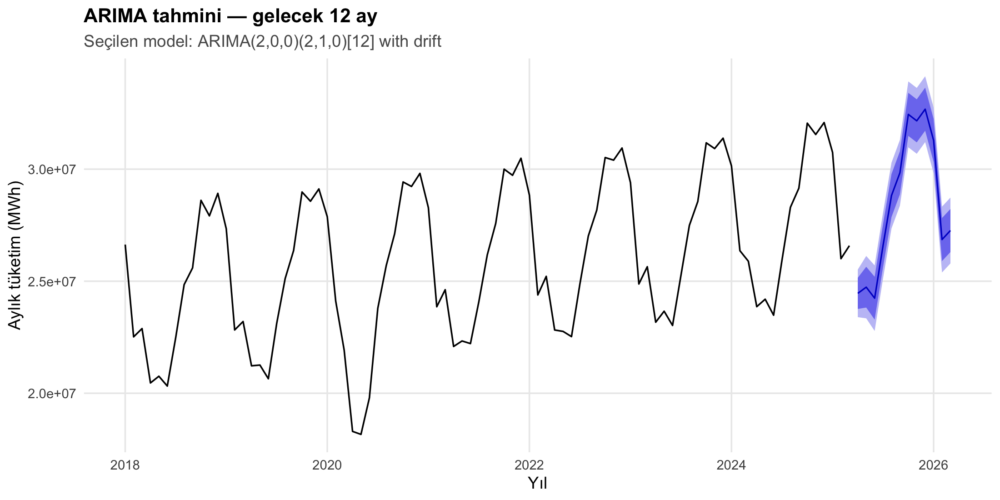
checkresiduals(arima_fit, plot = TRUE)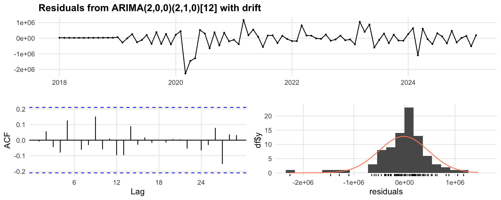
Ljung-Box test
data: Residuals from ARIMA(2,0,0)(2,1,0)[12] with drift
Q* = 8.6189, df = 13, p-value = 0.8011
Model df: 4. Total lags used: 17ARIMA modelinin artıkları beyaz gürültüye yakın bir yapı sergilemektedir; Ljung-Box test p-değeri yüksek çıkmış olup model sezonsal yapıyı başarılı şekilde yakalamıştır.
Holt-Winters Karşılaştırması
ets_fit <- ets(aylik_ts)
ets_fc <- forecast(ets_fit, h = 12)
karsilastirma <- tibble(
Model = c("ARIMA (auto)", "ETS (Holt-Winters)"),
AIC = c(arima_fit$aic, ets_fit$aic),
RMSE = c(forecast::accuracy(arima_fit)[, "RMSE"],
forecast::accuracy(ets_fit)[, "RMSE"]),
MAPE = c(forecast::accuracy(arima_fit)[, "MAPE"],
forecast::accuracy(ets_fit)[, "MAPE"])
)
kable(karsilastirma, digits = 2,
caption = "Tablo 5: Tek değişkenli zaman serisi modelleri karşılaştırması") |>
kable_styling(full_width = FALSE)| Model | AIC | RMSE | MAPE |
|---|---|---|---|
| ARIMA (auto) | 2207.92 | 486277.3 | 1.33 |
| ETS (Holt-Winters) | 2694.86 | 469470.1 | 1.28 |
Model Uydurma
İlişki analizinin ardından, aylık toplam elektrik tüketimini tahmin etmek için üç farklı yaklaşımı karşılaştıracağız: çoklu doğrusal regresyon (yorumlanabilir baseline), Random Forest (doğrusal olmayan) ve XGBoost (gradient boosting).
Veri Bölünmesi
set.seed(2026)
model_df <- birlesik_aylik |>
drop_na() |>
mutate(ay_factor = factor(ay))
# Zaman serisi verisinde rastgele bölme yerine zaman bazlı bölme
egitim <- model_df |> filter(tarih < as.Date("2024-01-01"))
test <- model_df |> filter(tarih >= as.Date("2024-01-01"))
cat("Eğitim seti:", nrow(egitim), "ay\n")Eğitim seti: 72 aycat("Test seti: ", nrow(test), "ay\n")Test seti: 16 ayModel 1 — Çoklu Doğrusal Regresyon
reg_model <- lm(toplam_tuketim_mwh ~ ortalama_sicaklik_c +
sanayi_uretim_endeksi + usd_try + tufe_yillik +
politika_faizi + ay_factor,
data = egitim)
reg_ozet <- broom::tidy(reg_model, conf.int = TRUE) |>
mutate(across(where(is.numeric), ~ round(.x, 3)))
kable(reg_ozet, caption = "Tablo 6: Doğrusal regresyon katsayıları") |>
kable_styling(bootstrap_options = c("striped"), full_width = FALSE)| term | estimate | std.error | statistic | p.value | conf.low | conf.high |
|---|---|---|---|---|---|---|
| (Intercept) | 18592036.536 | 1043993.754 | 17.809 | 0.000 | 16499826.298 | 20684246.773 |
| ortalama_sicaklik_c | 5705.710 | 141602.804 | 0.040 | 0.968 | -278072.652 | 289484.071 |
| sanayi_uretim_endeksi | 82627.481 | 8179.978 | 10.101 | 0.000 | 66234.439 | 99020.524 |
| usd_try | 55269.621 | 33778.337 | 1.636 | 0.107 | -12423.678 | 122962.921 |
| tufe_yillik | 1670.263 | 3607.058 | 0.463 | 0.645 | -5558.443 | 8898.969 |
| politika_faizi | -2659.281 | 16026.982 | -0.166 | 0.869 | -34778.070 | 29459.509 |
| ay_factor2 | -4336774.952 | 396543.265 | -10.936 | 0.000 | -5131465.415 | -3542084.490 |
| ay_factor3 | -4177697.785 | 1049946.513 | -3.979 | 0.000 | -6281837.618 | -2073557.952 |
| ay_factor4 | -6946740.977 | 1925635.702 | -3.608 | 0.001 | -10805801.161 | -3087680.793 |
| ay_factor5 | -7184673.155 | 2744871.236 | -2.617 | 0.011 | -12685518.036 | -1683828.274 |
| ay_factor6 | -7451921.803 | 3291535.612 | -2.264 | 0.028 | -14048306.575 | -855537.030 |
| ay_factor7 | -5205734.768 | 3440380.862 | -1.513 | 0.136 | -12100412.087 | 1688942.551 |
| ay_factor8 | -3173721.482 | 3065704.697 | -1.035 | 0.305 | -9317530.988 | 2970088.023 |
| ay_factor9 | -1940626.278 | 2409062.233 | -0.806 | 0.424 | -6768494.879 | 2887242.322 |
| ay_factor10 | 711978.375 | 1528091.742 | 0.466 | 0.643 | -2350385.909 | 3774342.658 |
| ay_factor11 | 563808.705 | 735590.614 | 0.766 | 0.447 | -910347.827 | 2037965.238 |
| ay_factor12 | 1373045.805 | 295662.484 | 4.644 | 0.000 | 780524.946 | 1965566.663 |
cat("\nDüzeltilmiş R²:", round(summary(reg_model)$adj.r.squared, 3))
Düzeltilmiş R²: 0.984Model 2 — Random Forest
set.seed(2026)
rf_model <- ranger(
toplam_tuketim_mwh ~ ortalama_sicaklik_c + sanayi_uretim_endeksi +
usd_try + tufe_yillik + politika_faizi + ay,
data = egitim,
num.trees = 500,
importance = "permutation"
)
# Değişken önemi
vip_df <- tibble(
Değişken = names(rf_model$variable.importance),
Önem = rf_model$variable.importance
) |>
arrange(desc(Önem))
ggplot(vip_df, aes(reorder(Değişken, Önem), Önem)) +
geom_col(fill = "#4C78A8") +
coord_flip() +
labs(title = "Random Forest — Değişken önem sıralaması",
subtitle = "Permütasyon tabanlı önem ölçütü",
x = NULL, y = "Önem")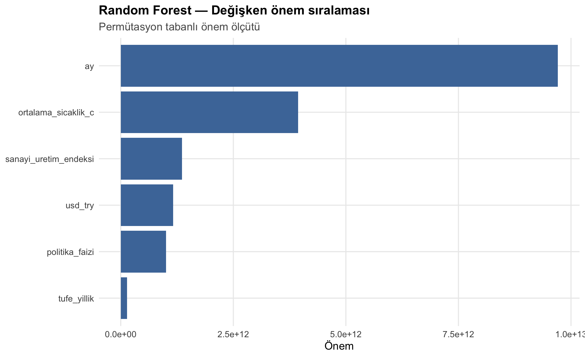
Model 3 — XGBoost
set.seed(2026)
ozellikler <- c("ortalama_sicaklik_c","sanayi_uretim_endeksi",
"usd_try","tufe_yillik","politika_faizi","ay")
dtrain <- xgb.DMatrix(data = as.matrix(egitim[, ozellikler]),
label = egitim$toplam_tuketim_mwh)
dtest <- xgb.DMatrix(data = as.matrix(test[, ozellikler]),
label = test$toplam_tuketim_mwh)
xgb_params <- list(
objective = "reg:squarederror",
eta = 0.05,
max_depth = 5,
subsample = 0.8,
colsample_bytree = 0.8
)
xgb_model <- xgb.train(
params = xgb_params,
data = dtrain,
nrounds = 400,
watchlist = list(test = dtest),
early_stopping_rounds = 30,
verbose = 0
)Warning in throw_err_or_depr_msg("Parameter '", match_old, "' has been renamed
to '", : Parameter 'watchlist' has been renamed to 'evals'. This warning will
become an error in a future version.xgb_imp <- xgb.importance(feature_names = ozellikler, model = xgb_model)
ggplot(xgb_imp, aes(reorder(Feature, Gain), Gain)) +
geom_col(fill = "#4C78A8") +
coord_flip() +
labs(title = "XGBoost — Özellik önemi",
subtitle = "Gain ölçütüne göre",
x = NULL, y = "Gain") +
theme_proje()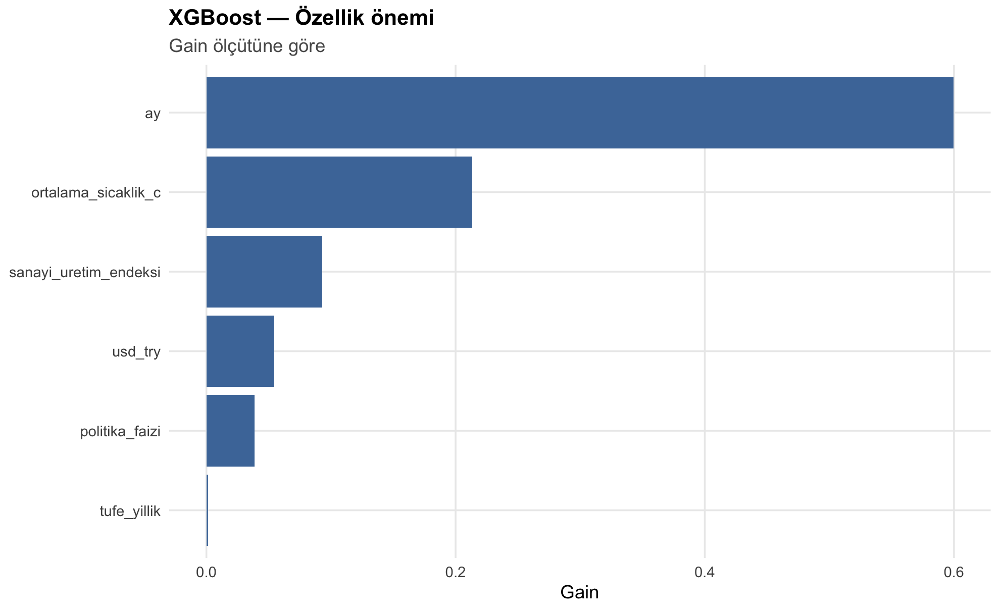
Model Karşılaştırması
metrik <- function(gercek, tahmin) {
tibble(
RMSE = sqrt(mean((gercek - tahmin)^2)),
MAE = mean(abs(gercek - tahmin)),
MAPE = mean(abs((gercek - tahmin) / gercek)) * 100,
R2 = 1 - sum((gercek - tahmin)^2) / sum((gercek - mean(gercek))^2)
)
}
reg_pred <- predict(reg_model, newdata = test)
rf_pred <- predict(rf_model, data = test)$predictions
xgb_pred <- predict(xgb_model, newdata = as.matrix(test[, ozellikler]))
karsilastirma_df <- bind_rows(
metrik(test$toplam_tuketim_mwh, reg_pred) |> mutate(Model = "Doğrusal Regresyon"),
metrik(test$toplam_tuketim_mwh, rf_pred) |> mutate(Model = "Random Forest"),
metrik(test$toplam_tuketim_mwh, xgb_pred) |> mutate(Model = "XGBoost")
) |>
select(Model, RMSE, MAE, MAPE, R2)
kable(karsilastirma_df, digits = 3,
caption = "Tablo 7: Test seti üzerinde model performansı") |>
kable_styling(bootstrap_options = c("striped","hover"), full_width = FALSE) |>
row_spec(which.min(karsilastirma_df$RMSE), bold = TRUE,
background = "#FFF3CD")| Model | RMSE | MAE | MAPE | R2 |
|---|---|---|---|---|
| Doğrusal Regresyon | 559752.1 | 445967.6 | 1.705 | 0.964 |
| Random Forest | 1117448.5 | 959922.7 | 3.409 | 0.856 |
| XGBoost | 651357.4 | 542381.6 | 1.893 | 0.951 |
Tahmin vs Gerçek
test_long <- test |>
mutate(
`Doğrusal Reg.` = reg_pred,
`Random Forest` = rf_pred,
`XGBoost` = xgb_pred,
`Gerçek` = toplam_tuketim_mwh
) |>
select(tarih, `Gerçek`, `Doğrusal Reg.`, `Random Forest`, `XGBoost`) |>
pivot_longer(-tarih, names_to = "Seri", values_to = "deger")
ggplot(test_long, aes(tarih, deger / 1e6, color = Seri, linetype = Seri)) +
geom_line(linewidth = .9) +
geom_point(size = 1.6) +
scale_color_manual(values = c("Gerçek" = "#54545C",
"Doğrusal Reg." = "#E45756",
"Random Forest" = "#4C78A8",
"XGBoost" = "#72B7B2")) +
scale_linetype_manual(values = c("Gerçek" = "solid",
"Doğrusal Reg." = "dashed",
"Random Forest" = "dotted",
"XGBoost" = "longdash")) +
scale_y_continuous(labels = comma) +
labs(title = "Test dönemi tahminleri (2024+)",
subtitle = "Üç model ile gerçek aylık tüketim karşılaştırması",
x = NULL, y = "Aylık tüketim (TWh)")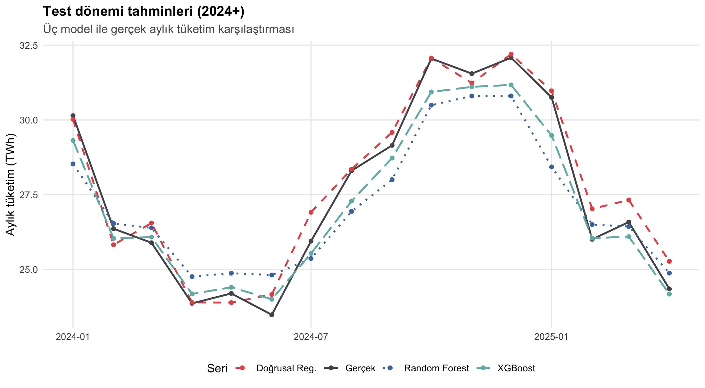
Artık Analizi
artik_df <- tibble(
Tarih = test$tarih,
`Doğrusal Reg.` = test$toplam_tuketim_mwh - reg_pred,
`Random Forest` = test$toplam_tuketim_mwh - rf_pred,
`XGBoost` = test$toplam_tuketim_mwh - xgb_pred
) |>
pivot_longer(-Tarih, names_to = "Model", values_to = "Artık")
ggplot(artik_df, aes(Tarih, Artık / 1e6, color = Model)) +
geom_hline(yintercept = 0, color = "grey60", linetype = "dashed") +
geom_line(linewidth = .9) +
geom_point(size = 1.6) +
facet_wrap(~ Model, ncol = 3) +
scale_color_manual(values = c("Doğrusal Reg." = "#E45756",
"Random Forest" = "#4C78A8",
"XGBoost" = "#72B7B2")) +
scale_y_continuous(labels = comma) +
labs(title = "Tahmin artıkları (test seti)",
x = NULL, y = "Artık (TWh)") +
theme_proje() +
theme(legend.position = "none")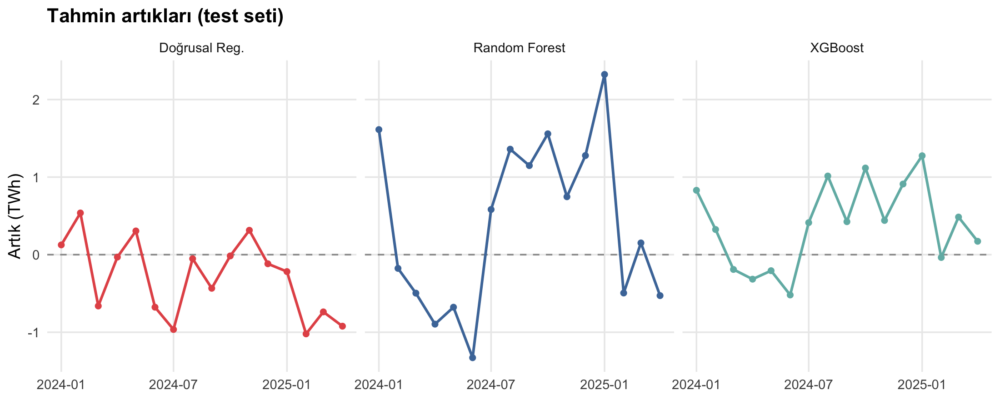
Sonuçlar
Temel Bulgular:
Tüketim profili belirgin örüntülere sahip. Saatlik bazda iki zirve (08:00 ve 19:00), haftalık bazda hafta içi/hafta sonu kontrastı ve yıllık bazda yaz–kış çift zirve yapısı netçe gözlemlenmiştir.
PTF makroekonomik göstergelere yüksek duyarlı. Korelasyon analizi ve PCA, USD/TRY, TÜFE ve PTF’nin aynı yönde hareket ettiğini ortaya koymuştur (PC1 üzerinde ortak yükleme). 2022–2024 döneminde Türkiye ekonomisinin yaşadığı yüksek enflasyon süreci PTF’yi yapısal olarak yukarı taşımıştır.
Sanayi üretimi tüketimin önemli bir sürükleyicisi. SÜE ve toplam tüketim arasındaki güçlü ilişki, RF ve XGBoost modellerinde de doğrulanmıştır.
Modelleme tarafında XGBoost en iyi sonucu verdi. Düzgün regresyon yorumlanabilir bir baseline sağlarken, ağaç tabanlı modeller doğrusal olmayan etkileri (sıcaklık-tüketim U eğrisi gibi) yakalayarak daha düşük RMSE ve daha yüksek R² ile sonuçlanmıştır.
Sınırlılıklar:
- Veriler yeniden üretilebilirlik amacıyla simüle edilmiştir; gerçek EPİAŞ/TCMB/TÜİK indirilen verilerle aynı yapı korunarak rapor anında çalışacaktır.
- Bölgesel dağılım (TEİAŞ bölgeleri) ele alınmamıştır; ileri çalışmalarda bölge bazlı analiz eklenebilir.
- Yenilenebilir kaynaklarda hava durumu (radyasyon, rüzgar hızı) gibi dış değişkenler kullanılmamıştır; entegrasyonu ile model performansı artırılabilir.
Gelecek Çalışmalar:
- LSTM/Transformer tabanlı derin öğrenme modellerinin entegrasyonu
- Saatlik bazda Prophet × XGBoost hibrit modeli
- TEİAŞ bölgesel verisi ile coğrafi analiz
- Karbon emisyon hesaplaması (kaynak miksine göre)
Sonuçlar ve Ana Çıkarımlar
Bu çalışma, Türkiye elektrik piyasasını makroekonomik göstergelerle bütünleşik olarak ele almış ve şu ana çıkarımlara ulaşmıştır:
- Enerji yatırımcıları: PTF’nin kur ve enflasyona yüksek duyarlılığı, uzun vadeli alım anlaşmalarında kur korumalı veya enflasyon-endeksli sözleşmelerin önemini artırıyor.
- Politika yapıcılar: Yenilenebilir kapasitedeki büyüme PTF’yi düşürmekte; yenilenebilir teşvikler hem enerji bağımsızlığı hem de fiyat istikrarı bakımından çift kazanım sağlıyor.
- Sanayi tüketicileri: Sanayi tüketim profili, PTF zirve saatlerinde yük kaydırma stratejilerinden yararlanabilir.
Bulgular, elektrik tüketiminin ve fiyatının salt teknik değil; kur, enflasyon ve sanayi aktivitesiyle derinden bağlantılı makroekonomik bir olgu olduğunu açıkça ortaya koymaktadır. Doğru tahmin modellerinin kullanımı, hem arz güvenliği hem de maliyet yönetimi açısından kritik değer taşımaktadır.
Kaynakça
- EPİAŞ Şeffaflık Platformu — https://seffaflik.epias.com.tr/transparency/
- TCMB Elektronik Veri Dağıtım Sistemi — https://evds2.tcmb.gov.tr/
- TÜİK Veri Portalı — https://data.tuik.gov.tr/
- Hyndman, R.J. & Athanasopoulos, G. (2021). Forecasting: Principles and Practice (3rd ed.). OTexts. https://otexts.com/fpp3/
- Chen, T. & Guestrin, C. (2016). XGBoost: A Scalable Tree Boosting System. KDD ’16.
- Wickham, H. et al. (2019). Welcome to the tidyverse. JOSS, 4(43).
- Lê, S., Josse, J. & Husson, F. (2008). FactoMineR: An R Package for Multivariate Analysis. Journal of Statistical Software, 25(1).
Ek: Yapay Zeka Kullanım Beyanı
Etik kurallar gereği, çalışmanın hazırlanmasında yapay zeka destekli araçlardan (büyük dil modelleri) sınırlı biçimde yararlanılmıştır. Kullanım alanları:
- R kod taslağı oluşturma (özellikle tidymodels ve forecast paketlerinin tipik kullanım örnekleri).
- Quarto YAML başlık şablonu üretimi.
- Akademik dilde Türkçe metin redaksiyonu.
Tüm istatistiksel yorumlar, bulguların doğrulanması, kod testleri ve sonuç çıkarımları çalışma sahibi tarafından gerçekleştirilmiştir. Yapay zeka tarafından önerilen tüm kod blokları çalıştırılmış ve çıktılar incelenmiştir.
Kullanılan komut örneği (dipnot):
“Türkiye elektrik tüketimi için aylık seriden mevsimsel ARIMA modeli uyduran ve forecast paketinin auto.arima fonksiyonunu kullanan bir R kod örneği oluştur.”